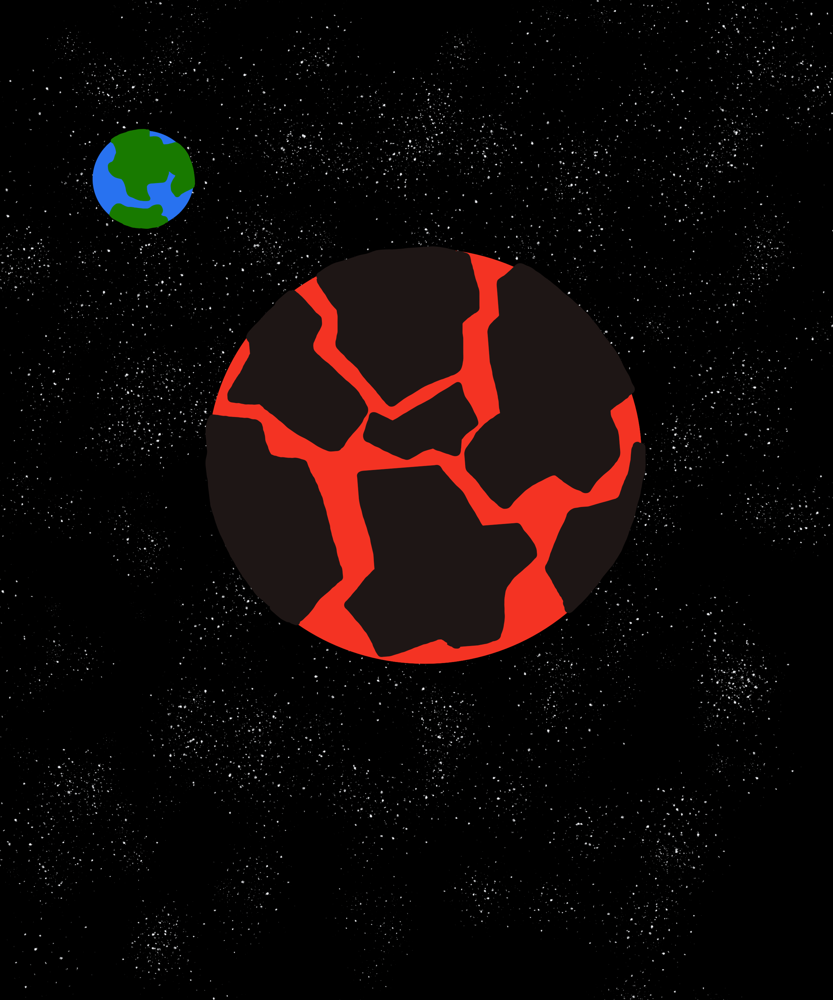

The Korun System

Celestial Bodies:
- Taemon: Hot molten planet with high geological activity; notable for containing the fortress prison Horum
- Korun: Taemon's grassy moon; terraformed home of Horum wardens and a Zoran missionary chapter
